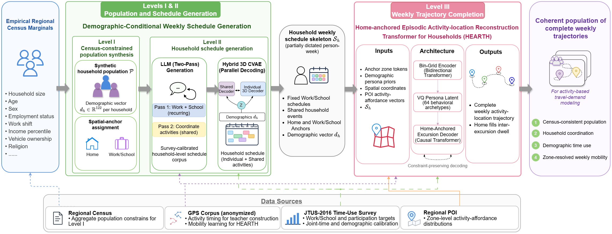
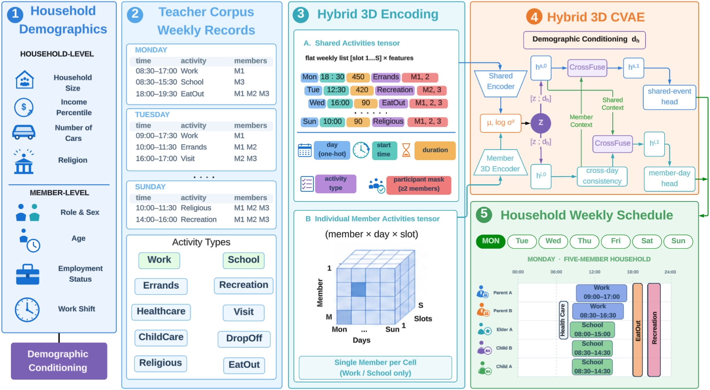
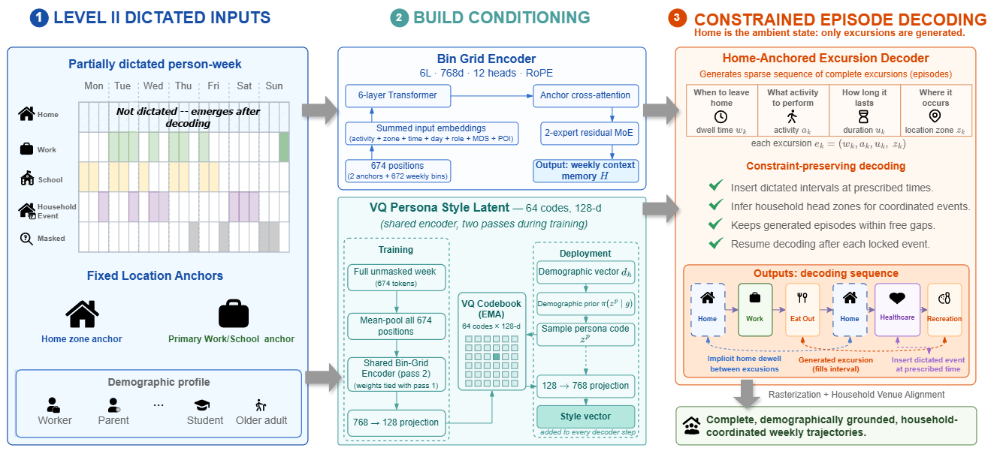
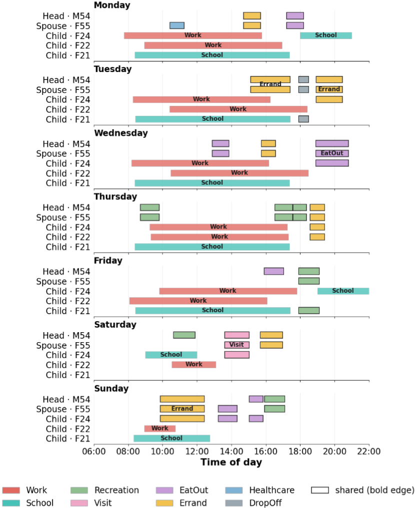
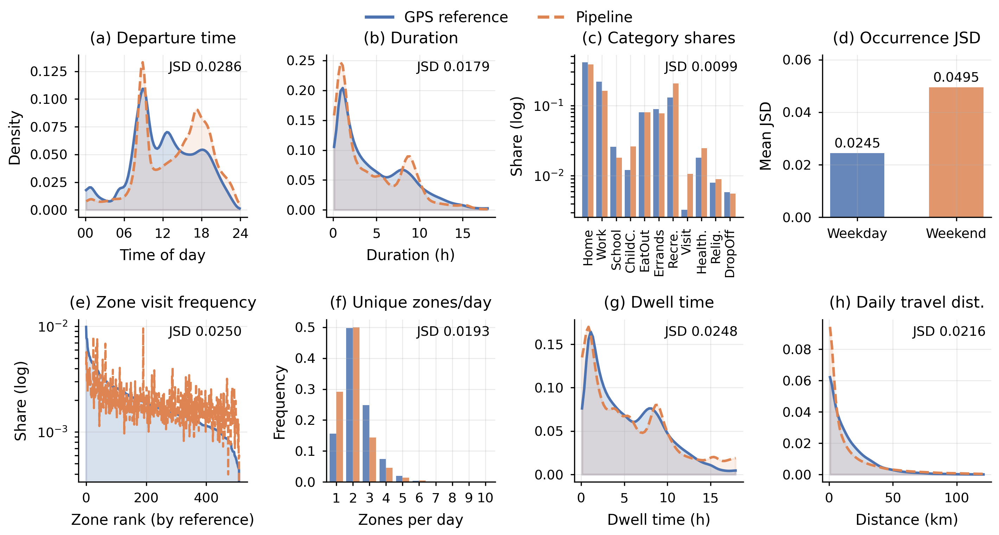

Census-constrained population synthesis
A sample-free synthesizer reconstructs households and members from aggregate census marginals, then assigns home and Work/School anchor zones.
Hierarchical Multi-Source Generation of Household-Coordinated Weekly Activity–Location Trajectories with Urban Populations Synthesis
UCLA Mobility Lab · New York University · Novateur Research Solutions · University of Central Florida | * equal contribution
Simulating a city needs a complete week for every resident: who lives together, when each person works or studies, where they go, and which activities they share with their household. That evidence is split across census tables, time-use surveys, POI data and anonymous GPS traces that cannot be linked person by person. PopTraj generates the whole object anyway. It synthesizes a census-consistent household population, gives each household a coordinated weekly schedule, and completes every member's week as zone-resolved activity–location trajectories. Each data source supervises only the level it actually observes.
PopTraj factorizes census-to-trajectory synthesis into three source-aligned levels connected by latent household variables. No language model is needed at inference, so hundreds of thousands of weekly trajectories are produced in hours.

A sample-free synthesizer reconstructs households and members from aggregate census marginals, then assigns home and Work/School anchor zones.
A survey-calibrated language model writes a coordinated-schedule teacher corpus, which is distilled into a Hybrid 3D conditional VAE that separates shared household events from individual routines.
A home-anchored transformer completes each dictated week as excursions (when, what, how long, where), steered by a vector-quantized persona latent learned from GPS.


One synthetic five-member household in Tokyo. Work and School follow each member's own rhythm, while shared errands, meals out, visits and recreation (bold edges) line up across members. The model reproduces this kind of coordination without ever seeing a household-labeled GPS trace.

Mean Jensen–Shannon divergence over six realism metrics (daily locations, departure time, duration, distance, radius, activity category) on the held-out Tokyo GPS test split. Lower is better.
-DH marks completion systems adapted to the task with dual activity/zone heads. Full 395K-week decode, 50K-sample evaluation.

On a 559-household held-out benchmark, per-member generators confirm only 4–5% of declared shared events, with coordination errors of 16.5–23.9. The deployed Level-II pipeline reaches 0.87, is overlap-free after post-processing, has the highest distinct-schedule rate (0.79), and generates 43 household-weeks per second.
Synthetic human mobility trajectories support urban planning, transportation simulation, and epidemic analysis by representing when, where, and how people conduct activities. However, existing approaches often model individuals independently or over single days, limiting joint representation of overnight activity, demographic heterogeneity, household interactions, and multiday regularities. The required evidence is fragmented across census, survey, geographic, and anonymous GPS data that cannot be linked at the individual level. We present PopTraj, a hierarchical multi-source generation framework for producing household-coordinated weekly activity–location trajectories for synthetic urban populations. PopTraj organizes generation into three source-aligned levels. A sample-free synthesizer reconstructs a household population from aggregate census constraints. A survey-calibrated language model produces a coordinated-schedule teacher corpus, which is distilled into a Hybrid 3D conditional variational autoencoder for scalable generation. Finally, HEARTH completes each dictated week as home-anchored excursions, using a vector-quantized persona latent to connect GPS-learned behavioral archetypes with a survey-derived demographic prior. In a metropolitan-scale Tokyo deployment, PopTraj generates 395K synthetic person-weeks. HEARTH achieves a mean divergence of 0.0252 across six realism metrics, compared with 0.0412 for the strongest of nine baselines. The deployed schedule pipeline reduces household coordination error by more than 16-fold relative to six learned baselines, while the persona prior halves demographic divergence with little change in aggregate realism. Source-removal, architecture, and error-propagation analyses show that the persona prior supplies demographic separation and the household schedule supplies cross-level coordination. PopTraj therefore provides a scalable route from unlinked population statistics and anonymous mobility data to simulation-ready human mobility trajectories.
@article{ma2026poptraj,
title = {PopTraj: Hierarchical Multi-Source Generation of Household-Coordinated
Weekly Activity-Location Trajectories with Urban Populations Synthesis},
author = {Ma, Haoxuan and Liu, Yifan and Yang, Bo and Zhang, Yiwen and
Stanford, Chris and Fox, Eli and Liao, Xishun and Ma, Jiaqi},
journal = {SSRN Electronic Journal},
year = {2026},
url = {https://ssrn.com/abstract=7484085},
note = {Preprint}
}